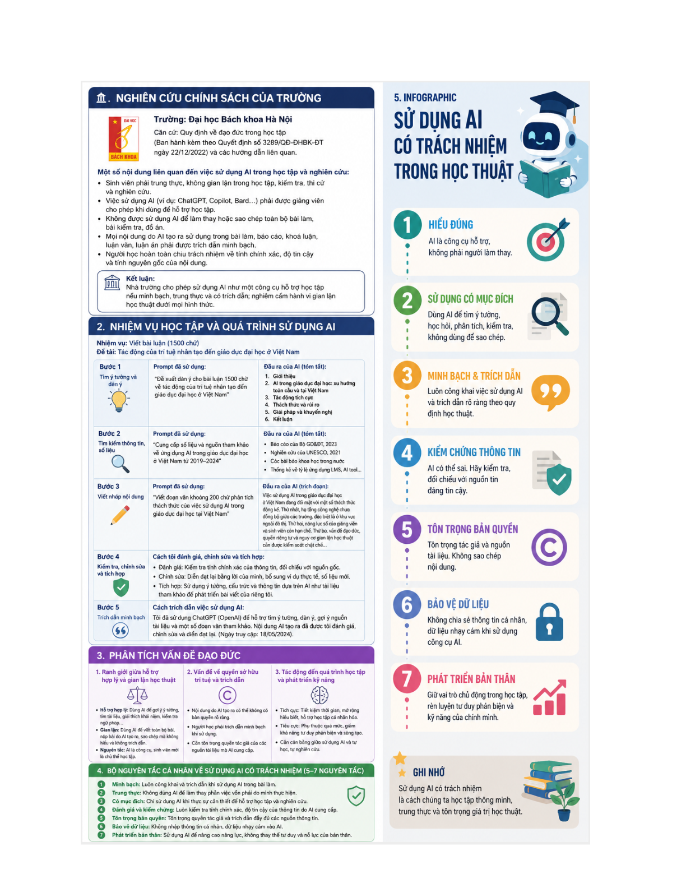

Sử dụng AI có trách nhiệm trong học tập và nghiên cứu
Đây là bài làm theo dạng infographic kết hợp báo cáo ngắn về việc sử dụng AI một cách có trách nhiệm trong môi trường học thuật. Nội dung vừa nhắc đến chính sách của trường, vừa trình bày một quy trình dùng AI minh bạch và bộ nguyên tắc cá nhân khi học tập.
Đạo đức học thuậtInfographicNguyên tắc sử dụng AI
Khái quát bài làm
Ý tưởng và định hướng trình bày
Bài này cho thấy cách mình nhìn AI như một công cụ hỗ trợ, chứ không phải sự thay thế cho tư duy học tập của người học.
Trong phiên bản website, nội dung được viết lại bằng lời văn mạch lạc hơn để tránh lỗi font và giảm cảm giác sao chép nguyên văn từ tài liệu gốc. Mỗi phần đều giữ đúng tinh thần bài làm ban đầu, đồng thời sắp xếp theo nguyên tắc: phần chữ đi trước, ảnh minh chứng đi sau.
Phần 1
Chính sách, quy trình sử dụng và các vấn đề đạo đức
Infographic tổng hợp một số nội dung chính từ quy định học tập của Trường Đại học Bách khoa Hà Nội về việc sử dụng AI trong học tập và nghiên cứu. Tinh thần chung là người học có thể dùng AI để hỗ trợ, nhưng phải trung thực, không sao chép và phải chịu trách nhiệm với nội dung mình nộp.
Bên cạnh đó, bài làm mô tả quy trình sử dụng AI cho một nhiệm vụ viết bài luận: tìm ý tưởng, tìm tài liệu, viết nháp, kiểm tra – chỉnh sửa và trích dẫn việc dùng AI một cách minh bạch. Cách trình bày này giúp phân biệt rõ phần AI hỗ trợ và phần người học tự đánh giá, tự hoàn thiện.
Phần phân tích đạo đức tập trung vào ba vấn đề lớn: ranh giới giữa hỗ trợ hợp lý và gian lận học thuật, vấn đề quyền sở hữu trí tuệ và trích dẫn, cùng với tác động của AI đến quá trình học tập và phát triển kỹ năng.

Minh chứng 1 – tư liệu gốc được đặt ngay sau phần nội dung liên quan.
Bảng tổng hợp
Bộ nguyên tắc cá nhân khi sử dụng AI
Nguyên tắc
Diễn giải ngắn
Hiểu đúng
Xem AI là công cụ hỗ trợ, không phải người làm thay
Sử dụng có mục đích
Dùng AI để gợi ý, phân tích, học hỏi và kiểm tra, không dùng để sao chép
Minh bạch và trích dẫn
Nêu rõ khi có sử dụng AI và ghi nguồn phù hợp theo quy định học thuật
Kiểm chứng thông tin
Đối chiếu lại nội dung AI tạo ra với nguồn tin đáng tin cậy
Tôn trọng bản quyền
Tôn trọng tác giả và không sao chép nguyên nội dung
Bảo vệ dữ liệu
Không chia sẻ thông tin nhạy cảm hoặc dữ liệu cá nhân lên công cụ AI
Phát triển bản thân
Giữ vai trò chủ động, rèn tư duy phản biện và dùng AI để nâng năng lực cá nhân
Kết quả & cảm nhận
Điều mình rút ra sau bài tập
Qua bài này, mình nhận thức rõ hơn rằng dùng AI hiệu quả phải đi cùng với tính trung thực, khả năng kiểm chứng và tinh thần tự học. Đây cũng là nguyên tắc mình muốn duy trì trong các học phần và dự án sau này.